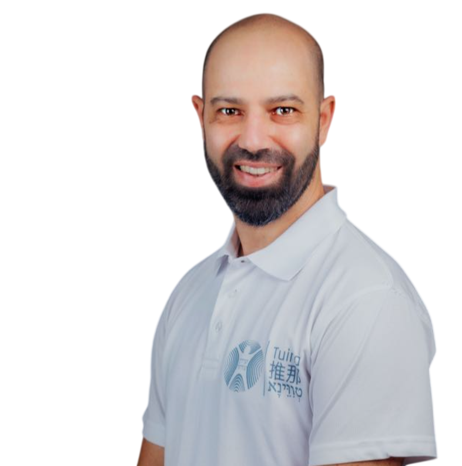
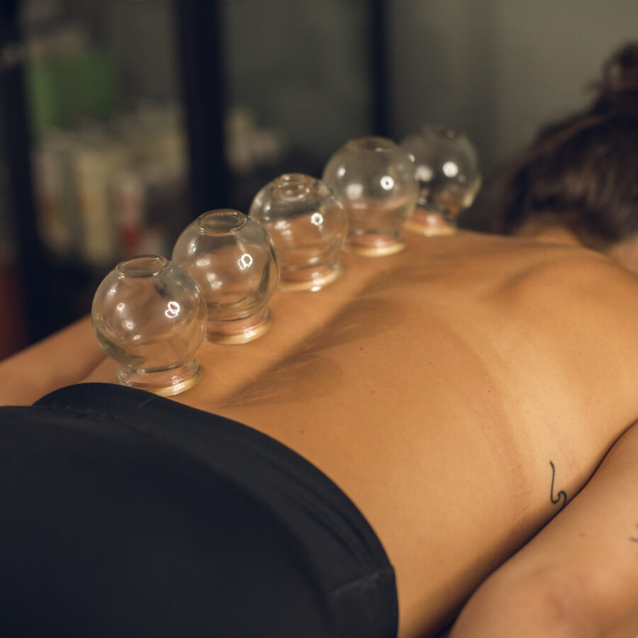
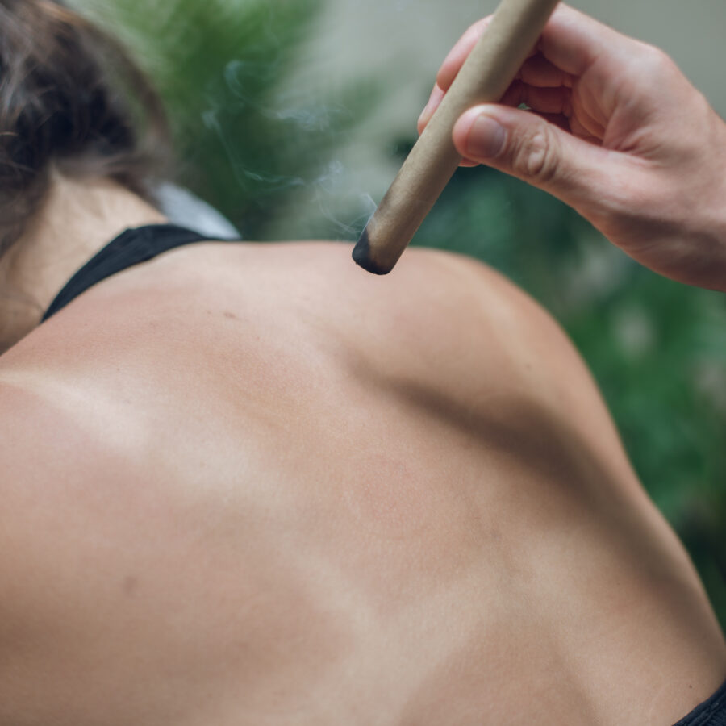

דיקור סיני מתקדם
עבודה על מערכות הגוף, נקודות מפתח ומסלולים אנרגטיים. שחרור מתח עמוק, ויסות מערכת העצבים והפחתת דלקתיות באזורים פגועים.
פתרונות מותאמים אישית לכאב ולבריאות בשיטת הרפואה הסינית.

קוראים לי עידן עזיזה. אני מטפל ברפואה סינית וטווינא מעל עשור, ובמקביל ספורטאי פעיל בענפי אקסטרים – גלישה, סנובורד וצלילה.
השילוב הזה מעצב את הקליניקה שלי. אני מבין מבפנים מה הגוף עושה תחת עומס, איך נראית פציעה אמיתית, ומה הפער בין "נגמר הכאב" לבין חזרה מלאה לתפקוד. הטיפול שלי משלב טכניקות דיקור מתקדמות יחד עם טווינא אינטנסיבי ומדויק – טיפול מגע שמכוון ישירות אל הרקמה הנפגעת ואל המקור של הבעיה.
רפואה סינית מבוססת על אבחון מעמיק של הגוף כמערכת אנרגטית שלמה. טווינא הוא טיפול מגע סיני אינטנסיבי ומדויק. השילוב ביניהם מאפשר להגיע גם אל מה שמחטים לבדן או ידיים לבדן לא מגיעות אליו.
עבודה על מערכות הגוף, נקודות מפתח ומסלולים אנרגטיים. שחרור מתח עמוק, ויסות מערכת העצבים והפחתת דלקתיות באזורים פגועים.
טיפול מגע סיני עוצמתי. עבודה על שרירים עמוקים, פאשיה, מפרקים וטריגר פוינטס. מאפשר תיקון מכני אמיתי, שחרור הידבקויות וחזרה מהירה לטווחי תנועה.
הבנה מעמיקה של ביומכניקה, פציעות עומס וסיבות שורש. הטיפול לא מטפל רק במקום שכואב – הוא מטפל במה שגרם לו לכאוב.
כל מטופל מקבל תכנית טיפול ייחודית – שילוב של תדירות, טכניקות והנחיות ביתיות. מטרה ברורה, מדדים, ומועד יציאה לחיים מלאים.

שחרור מתחים עמוקים בשרירים, שיפור זרימת הדם והפחתת דלקת באזורים פגועים.

חימום נקודתי באמצעות צמח המוֹקְסָה – מחזק, מחמם ומאזן את אנרגיית הגוף בנקודות מפתח.
טיפול בכאבי גב וצוואר (פריצות ובלטי דיסק), פציעות ספורט, דלקות גידים ושחיקה של מערכת השלד והשריר. נחזיר יחד את הגמישות והתנועה בעזרת שחרור רקמות עמוק ותמיכה מפרקית.
הפגת מתח נפשי המתבטא בגוף כנוקשות, עייפות כרונית או חוסר שקט. הטיפול משלב עבודה על הנשימה וטכניקות להרגעת מערכת העצבים, לשיפור איכות השינה ושחרור תחושת ה"כבדות" הכללית.
מענה לכאבי מחזור וחוסר איזון הורמונלי, לצד ליווי עוטף בתקופת ההריון – לפני ואחרי לידה. טיפול עדין להקלה על עומסי גב ואגן, הפחתת נפיחויות ורגע של שקט וביטחון בתוך השינויים של הגוף.
תמיכה במצבי חולשה חיסונית, הצטננויות חוזרות, ליחה וקשיים בנשימה. שימוש במוקסה וכוסות רוח לחיזוק האנרגיה של הגוף, פינוי חסימות בבית החזה ושיפור העמידות לשינויי מזג האוויר.
חיזוק המערכת החיסונית והעיכול של הקטנטנים, ושיפור הרווחה הכללית. הטיפול נעשה בסבלנות רבה, בגובה העיניים ובאווירה ביתית שגורמת לילד ולהורה להרגיש הכי בבית שיש.
שיחה חינמית של 15 דקות בטלפון או ב‑WhatsApp. אני שומע על הבעיה, על הרקע, על מה ניסיתם, ובודקים יחד אם זה מתאים – לפני שאתם בכלל מגיעים לקליניקה.
פגישה ראשונה של כשעה. אבחון לפי שיטת הרפואה הסינית, בדיקה אורתופדית מעשית, בניית תמונה מלאה של הגוף, אורח החיים והפציעה. בסוף הפגישה – תוכנית ברורה.
כל פגישה משלבת דיקור סיני וטווינא, בהתאמה לשלב בטיפול. אני מלווה אתכם לאורך כל הדרך, מודד התקדמות, ומתאים את הטיפול לפי מה שהגוף שלכם מראה.
המטרה היא לא להפוך אתכם למטופלים קבועים. המטרה היא לשחרר אתכם – חזרה לאימון, לעבודה, להריון בריא, לילדים שלכם – בלי כאב ובלי תלות.
הגעתי לעידן אחרי שנתיים של פציעה בכתף ופיזיותרפיה שלא התקדמה. אחרי ארבעה טיפולים חזרתי לגלוש. הוא יודע בדיוק לאן להגיע ולמה – זה שונה מכל טיפול אחר שהיה לי.
סבלתי מכאבי גב תחתון יותר מעשור. אצל עידן הרגשתי לראשונה שמישהו באמת מבין את הגוף שלי. הקליניקה שקטה, מקצועית, ומרגישה כמו מקום שאפשר באמת להירפא בו.
הגעתי בשבוע 32 עם כאבי גב בלתי נסבלים. עידן ליווה אותי עד הלידה. יחס מדהים, ידיים זהב, וביטחון מלא שאני בידיים בטוחות. ממליצה לכל אישה בהיריון.
לא מצאתם תשובה לשאלה שלכם? כתבו לי ב‑WhatsApp ואחזור אליכם תוך 24 שעות.
שאל אותי ישירותתלוי בעוצמת ובוותק הבעיה. בעיה חדה תיפתר לרוב ב‑3‑5 טיפולים, ובעיה כרונית של שנים יכולה לדרוש 8‑12 טיפולים. בפגישה הראשונה אני נותן לכם הערכה ברורה, לא נשארים בעמימות.
המחטים הסיניות דקות מאוד – הרבה יותר ממחטים רפואיות רגילות. רוב המטופלים מרגישים תחושת לחץ עדינה, לא כאב. זה לא מפחיד גם בפגישה הראשונה.
לחלוטין. אני עובד עם פרוטוקול מותאם להיריון, מכיר את הנקודות שלא נוגעים בהן בכל טרימסטר, ומלווה נשים מהשבוע הראשון ועד הלידה. זה אחד התחומים המבוקשים בקליניקה.
טווינא הוא טיפול קליני, לא עיסוי הרפיה. הוא ממוקד באבחון, בעבודה על נקודות מפתח, פאשיה, מפרקים וטריגר פוינטס. המטרה היא תוצאה טיפולית מדידה – לא רק להרגיש טוב לשעה.
סיכומים רפואיים אם יש (MRI, רנטגן, סיכומי רופא). בגדים נוחים. ולא להגיע על קיבה ריקה לגמרי או מלאה מדי. כל היתר – נדאג בקליניקה.
רוב הביטוחים המשלימים מחזירים חלק משמעותי מעלות הטיפול ברפואה סינית. אני שולח קבלה מסודרת לאחר כל פגישה. אם תרצו, אבדוק איתכם אישית את הזכאות בפגישה הראשונה.
שיחת היכרות ראשונית – חינם, ללא התחייבות, ובלי לחץ.
השאירו פרטים ואחזור אליכם תוך יום עסקים. בשיחה הראשונה לא משלמים – רק בודקים יחד אם זה מתאים.